Van Gogh
34 approved faces, including The Painter’s Vermilion Dragon for red dragon, The Almond-Blossom Dragon C for white dragon, Cloudborne West above the sunset lighthouse for West wind, The Billowing Courtyard A for South wind, The Red Sail for 1 character, completing the characters suit, Green Dragon at the Vineyard C for green dragon, Lemons by the Sea for 8 disks, Poppy Field with smaller 萬 for 9 characters, Seven Apples at the Window for 7 disks, The Provençal Kitchen B for 6 disks, Starry Olive Grove for 8 characters, Four Oranges A for 4 disks, Irises at Dusk C for 7 characters, The Scarlet Loom C for 6 characters, The Red Vineyard for 5 characters, The Potter’s Table C for 9 disks, Three Café Lanterns for 3 disks, Moonlit Wind Chime for 9 bamboo, Green Still Life B for 6 bamboo, Copper Sunset for 5 bamboo, the Bamboo Raft for 8 bamboo, Seven with Irises C for 7 bamboo, green Moonlit Four for 4 bamboo, green Triple Shoots for 3 bamboo, green Garden Rhythm for 2 bamboo, Night Cafe for 2 of characters, Almond Branches for 3, Cypress Fields for 4, Blazing Dawn for East and Snowbound North B for North. Choose Options → Tile face → Van Gogh in the game. Every tile type now has approved artwork.
Approved artwork
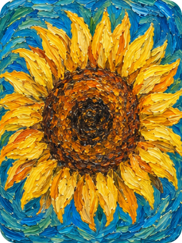
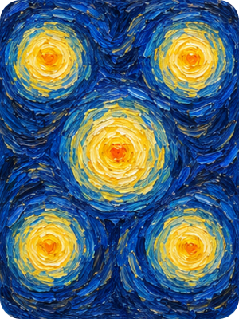
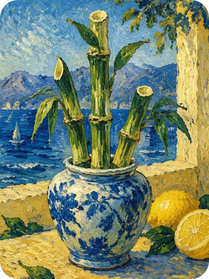
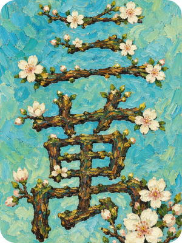
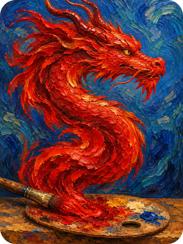
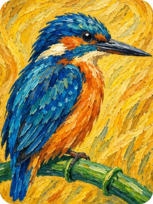
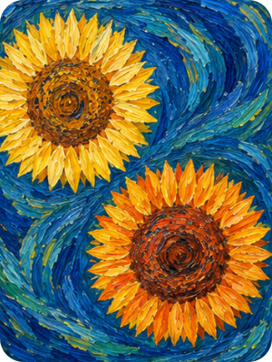
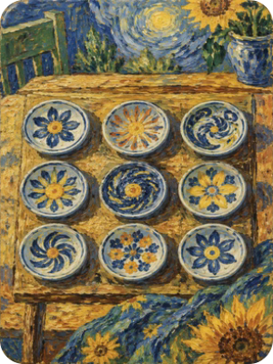
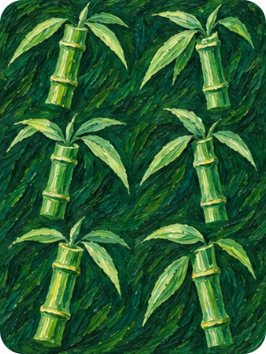
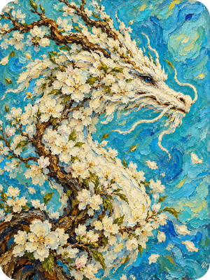
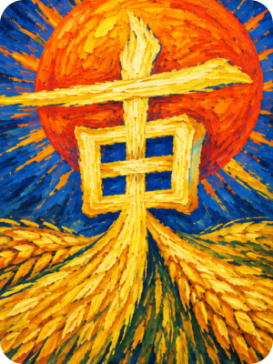
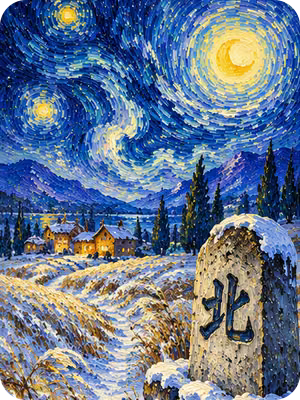
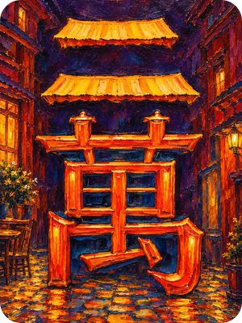

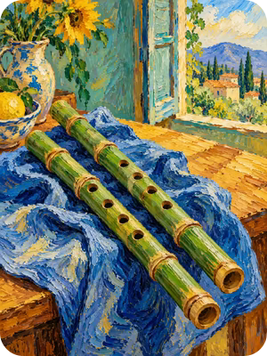
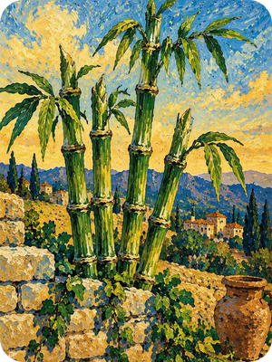
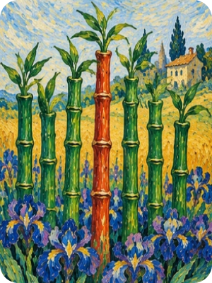
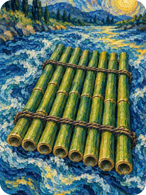
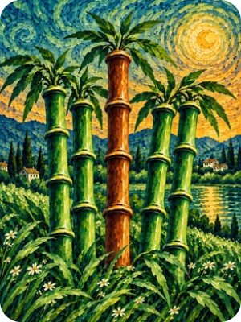
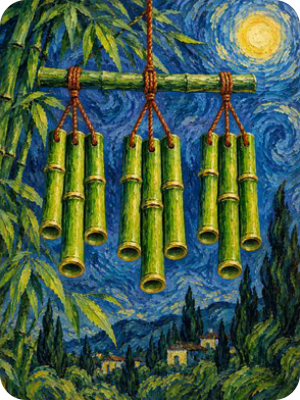
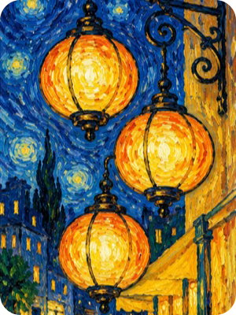
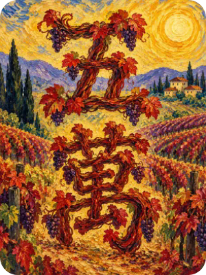
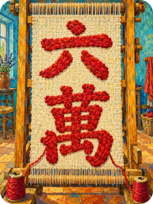
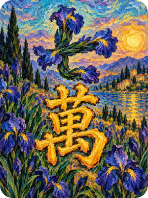
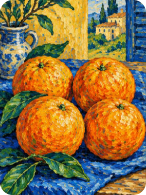
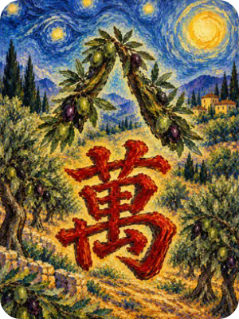
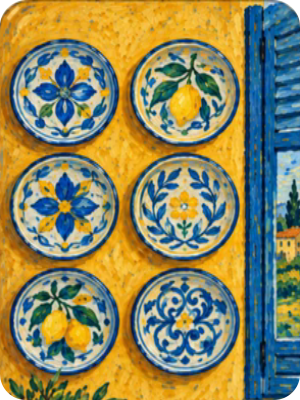
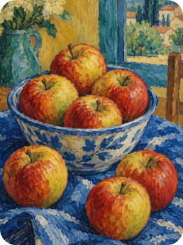
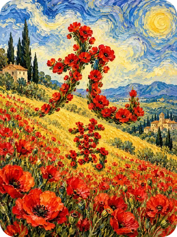
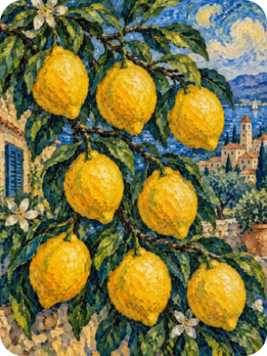
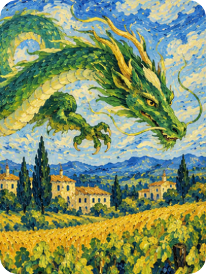
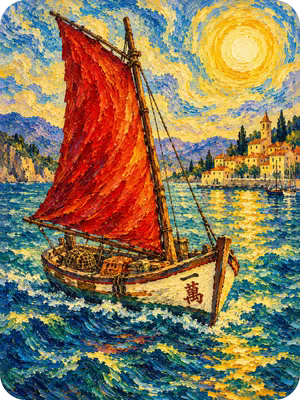
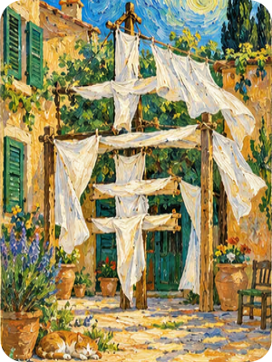
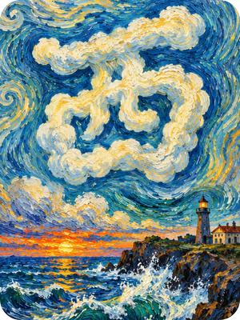
A mixed hand
East wind K is excluded. The Almond-Blossom Dragon C replaces White dragon L and uses the normal dora ring and foil sheen.
The Painter’s Vermilion Dragon retains the full approved 1086 × 1448 paintbrush-and-palette painting in a 300 × 400 quality-70 AVIF game export, with zero stretch and zero extra bleed. Vermilion E remains in the design archive as its exact previous PNG and SVG. The Almond-Blossom Dragon C retains the entire approved 1086 × 1448 painting in a 300 × 400 quality-70 AVIF game export, with zero stretch and zero extra bleed. Quiet Dragon L remains in the design archive as its exact previous PNG and SVG. Snowbound North B uses the selected winter scene, cropped to 456 × 608 and uniformly downsampled to a 300 × 400 quality-60 AVIF, with zero stretch and zero extra bleed. The full selected panel and original triptych are backed up separately, and the old Wind Ribbons source and playable images remain in the design archive. The Red Sail (1 character) retains the complete approved 1086 × 1448 composition in a 300 × 400 quality-60 AVIF game export, with zero stretch and zero bleed; the untouched original PNG is backed up separately. The Billowing Courtyard A uses a quality-70 AVIF game export and a documented 2% fit of its 393 × 640 painting, trimming surrounding sky and paving while retaining the linen structure. Its original board and lossless selected crop are preserved separately. Earlier selected art is preserved in lossless PNG crops. The Scarlet Loom C retains the complete approved 1086 × 1448 portrait in a 300 × 400 quality-70 AVIF export, with zero stretch and zero extra bleed. The previous Lemon Terrace playable SVG and original optimized source remain in the design archive. The Potter’s Table C uses its existing approved 300 × 400 quality-95 WebP game export, copied byte-for-byte without repainting or recompression. Nine Stars I remains preserved in the design archive. The newer green bamboo studies use web-optimized crops. Irises at Dusk (7 characters), The Red Vineyard (5 characters), Three Café Lanterns (3 disks), Moonlit Wind Chime (9 bamboo), Green Still Life B (6 bamboo) and Bamboo Raft preserve their complete approved compositions and colours in 300 × 400 WebP images embedded in their SVGs; these are not the full-resolution source PNGs. A painting that is not 3:4, including one squeezed into a 300 × 400 export, is cropped to the face rather than stretched, keeping its proportions to within 2%, or within 4% where its counted objects and characters fill more of it; the manifest records each fit. Source checksums and processing are documented. Export manifest